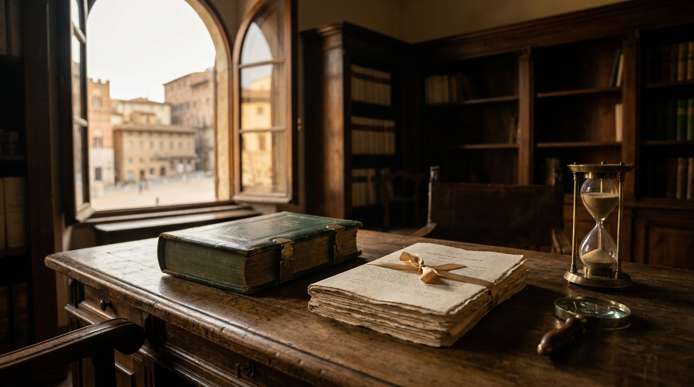

NASpI non dovuta: in quanto tempo l'INPS può chiedere la restituzione
Chi ha percepito la NASpI può ricevere, anche a distanza di anni, una richiesta di restituzione dall'INPS. Il termine entro cui l'Istituto può agire è di dieci anni e decorre dal pagamento. Capire come funziona la prescrizione è essenziale per valutare se la pretesa è ancora esigibile o se è ormai estinta.

Il caso
La NASpI è l'indennità di disoccupazione spettante a chi perde involontariamente il lavoro. Può accadere che l'INPS eroghi somme che, a controlli successivi, risultano non dovute: per requisiti mancanti, per una nuova occupazione non comunicata, per errori di calcolo o per cause di decadenza intervenute.
In questi casi l'Istituto avvia il recupero dell'indebito. La domanda pratica è una sola: per quanto tempo l'INPS può chiedere indietro quelle somme prima che la pretesa si prescriva?
Inquadramento normativo
La restituzione di somme versate senza titolo rientra nella disciplina dell'indebito oggettivo prevista dall'art. 2033 del Codice civile. La norma stabilisce che chi ha ricevuto un pagamento non dovuto è tenuto a restituirlo a chi lo ha effettuato.
Il diritto al recupero non è però esercitabile senza limiti di tempo. In assenza di una prescrizione speciale per l'indebito previdenziale di natura assistenziale come la NASpI, si applica la prescrizione ordinaria decennale: dieci anni dal momento in cui il diritto può essere fatto valere.
Il punto di partenza del conteggio è fissato dall'art. 2935 c.c., secondo cui la prescrizione decorre dal giorno in cui il diritto può essere esercitato. Per la NASpI, questo coincide con il giorno del pagamento di ciascuna mensilità: è da quella data che l'INPS avrebbe potuto, in astratto, accorgersi dell'errore e attivarsi.
È una differenza rilevante rispetto alle pensioni. Per i ratei pensionistici indebiti operano spesso termini e regole diverse, anche più favorevoli al percettore. La NASpI, invece, segue la regola generale dell'indebito, come confermato dalla giurisprudenza di merito che ha respinto tentativi di assimilarla al trattamento pensionistico.
Implicazioni pratiche
Il primo effetto è che ogni mensilità di NASpI ha un proprio termine di prescrizione. Se l'indennità è stata erogata per più mesi, il decennio si calcola separatamente per ciascun pagamento. È quindi possibile che, in una stessa richiesta dell'INPS, alcune somme siano ancora recuperabili e altre già prescritte.
Il secondo effetto riguarda la verifica delle date. La richiesta di restituzione che arriva oggi va confrontata con la data effettiva di ciascun accredito: solo i pagamenti che rientrano nei dieci anni precedenti l'atto interruttivo sono esigibili.
Terzo punto: la prescrizione può essere interrotta. Una raccomandata, una diffida formale o un atto di costituzione in mora dell'INPS azzerano il conteggio e fanno ripartire il termine. Per questo è importante conservare le comunicazioni ricevute negli anni e verificare se vi siano stati atti interruttivi precedenti.
Va infine ricordato che la prescrizione non opera in automatico: deve essere eccepita dal debitore. Se il destinatario paga o non solleva l'eccezione nei tempi e nelle forme corrette, perde la possibilità di farla valere.
Cosa fare in concreto
- Verifica le date di pagamento. Recupera gli estratti degli accrediti NASpI e confrontali con la data della richiesta dell'INPS: individua quali mensilità superano i dieci anni.
- Controlla eventuali atti interruttivi. Cerca diffide, raccomandate o solleciti ricevuti in precedenza che possano aver fatto ripartire il termine.
- Non ignorare la richiesta. Il silenzio non estingue la pretesa e può portare a recuperi coattivi o a trattenute su prestazioni future.
- Solleva l'eccezione di prescrizione nei modi corretti, per iscritto e nei termini, se ritieni che le somme siano ormai non più esigibili.
- Valuta la fondatezza dell'indebito. Prima ancora della prescrizione, accerta se le somme erano davvero non dovute: in alcuni casi la pretesa è contestabile nel merito.
Consigliamo di esaminare ogni richiesta di restituzione con riferimento sia ai termini di prescrizione sia ai presupposti dell'indebito, perché i due profili possono offrire margini di difesa distinti e cumulabili.
---
*Contributo informativo a cura di Tamburro & Partners - Avv. Giuseppe Tamburro. Non costituisce parere legale.*
Ogni storia di lavoro ha i suoi tempi.
Se gestisci HR e vuoi un confronto su contenzioso, ispezioni o licenziamenti, scrivi allo studio. Ti rispondiamo entro un giorno lavorativo.